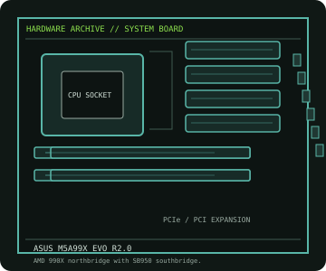

[ INDIVIDUAL COMPONENT // MOTHERBOARDS ]
ASUS M5A99X EVO R2.0
AM3+ enthusiast platform with AMD 990X/SB950, DDR3, multi-slot PCIe 2.0 and SATA 6 Gb/s storage. This is the R2.0 model record.

IDENTIFICATION: Confirm the full model name, printed PCB revision and firmware identifier on the physical board. Variants with similar names may differ in CPU support, BIOS, memory and connectors.
Specifications
| Catalog subcategory | AMD Socket platforms |
|---|---|
| Exact board / model | ASUS M5A99X EVO R2.0 |
| Era / platform | Socket AM3+ / AMD 990X + SB950, 2012 |
| CPU and socket | AM3+ and selected AM3 processors supported only as listed by ASUS for PCB/model and BIOS; check CPU TDP and minimum BIOS. |
| Chipset / controller | AMD 990X northbridge with SB950 southbridge. |
| Memory | Four DDR3 DIMM slots, dual-channel, up to 32 GB; rated speeds above the standard profile depend on CPU and memory configuration. |
| Form factor | ATX (305 × 244 mm) |
| Expansion and storage | Two PCIe 2.0 x16-length slots, a third x16-length slot wired at x4, PCIe x1 and legacy PCI; six SATA 6 Gb/s and two eSATA 6 Gb/s ports. |
| Firmware compatibility | Use the exact model and board revision support page. Check CPU support and minimum BIOS before fitting a processor; do not flash firmware intended for a similarly named board. |
Compatibility and revision notes
R2.0 is a specific hardware release. Do not flash BIOS for another M5A99X or R1.0 variant. Check the CPU support table for required BIOS and power envelope.
Before installation, check the manufacturer’s model-specific CPU support table and manual. Verify the power supply, cooler, chassis clearance, memory population rules and any shared PCIe or SATA lanes for the intended configuration.
Preservation and repair
Inspect AM3+ socket pins, VRM heatsinks and eSATA/SATA headers. Keep revision-matched firmware and note RAID mode and shared PCIe resources before servicing.
For an archive record, photograph PCB labels before cleaning and note serial/date codes, firmware, accessories, known faults, repairs and test conditions. Use ESD-safe handling; do not energize a board with loose conductive hardware beneath it.
Sources & further reading
- ASUS M5A99X EVO R2.0 manualsManufacturer manual and support resources for the R2.0 board.
- ASUS M5A99X EVO R2.0 CPU support listCPU models and minimum BIOS revisions for compatibility checks.
Primary manufacturer documentation is the compatibility authority. Match the cited support table and manual to the exact model and PCB revision; do not transfer firmware or CPU claims between near-name variants.